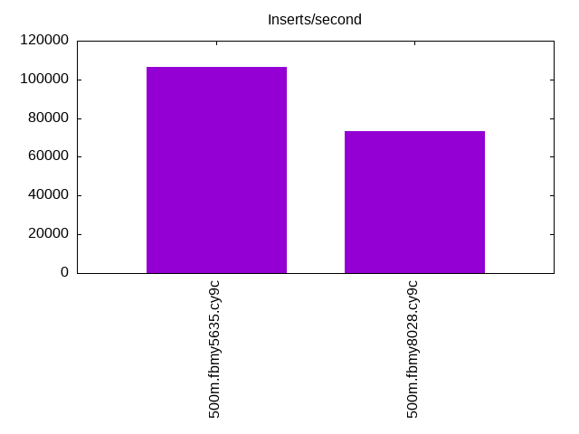
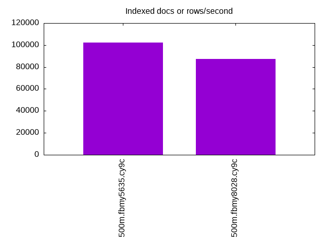
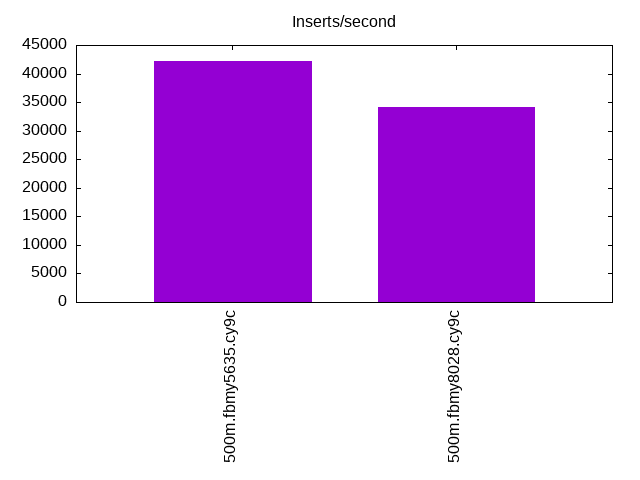
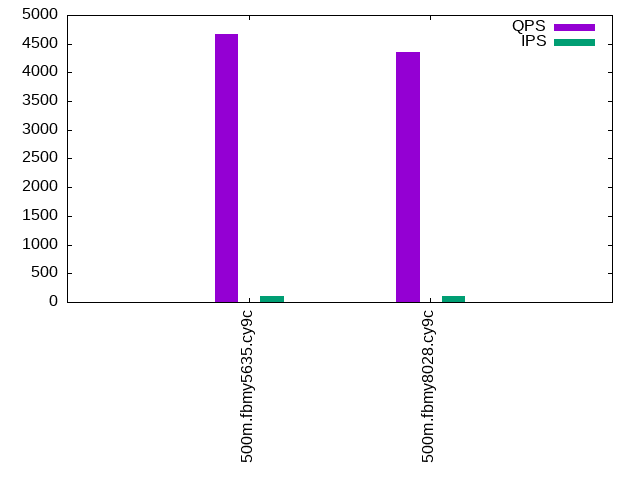
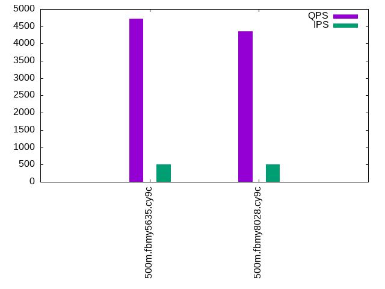
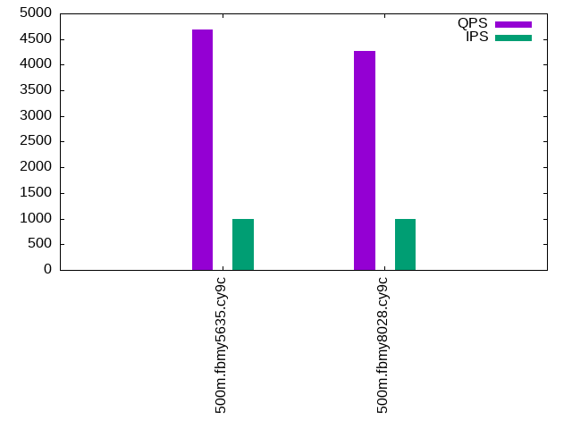

This is a report for the insert benchmark with 500M docs and 1 client(s). It is generated by scripts (bash, awk, sed) and Tufte might not be impressed. An overview of the insert benchmark is here and a short update is here. Below, by DBMS, I mean DBMS+version.config. An example is my8020.c10b40 where my means MySQL, 8020 is version 8.0.20 and c10b40 is the name for the configuration file.
The test server is an Intel NUC with 4 cores, 16G RAM and a Samsung 970 EVO. More details are here. Clients and the DBMS share one server. The per-database configs are in the per-database subdirectories here.
The tested DBMS are:
The numbers are inserts/s for l.i0 and l.i1, indexed docs (or rows) /s for l.x and queries/s for q*.2. The values are the average rate over the entire test for inserts (IPS) and queries (QPS). The range of values for IPS and QPS is split into 3 parts: bottom 25%, middle 50%, top 25%. Values in the bottom 25% have a red background, values in the top 25% have a green background and values in the middle have no color. A gray background is used for values that can be ignored because the DBMS did not sustain the target insert rate. Red backgrounds are not used when the minimum value is within 80% of the max value.
| dbms | l.i0 | l.x | l.i1 | q100.1 | q500.1 | q1000.1 |
|---|---|---|---|---|---|---|
| 500m.fbmy5635.cy9c | 106519 | 102040 | 42194 | 4668 | 4718 | 4680 |
| 500m.fbmy8028.cy9c | 73271 | 87141 | 34130 | 4357 | 4349 | 4277 |
This lists the average rate of inserts/s for the tests that do inserts concurrent with queries. For such tests the query rate is listed in the table above. The read+write tests are setup so that the insert rate should match the target rate every second. Cells that are not at least 95% of the target have a red background to indicate a failure to satisfy the target.
| dbms | q100.1 | q500.1 | q1000.1 |
|---|---|---|---|
| fbmy5635.cy9c | 100 | 499 | 999 |
| fbmy8028.cy9c | 100 | 499 | 999 |
| target | 100 | 500 | 1000 |
l.i0: load without secondary indexes. Graphs for performance per 1-second interval are here.
Average throughput:
Insert response time histogram: each cell has the percentage of responses that take <= the time in the header and max is the max response time in seconds. For the max column values in the top 25% of the range have a red background and in the bottom 25% of the range have a green background. The red background is not used when the min value is within 80% of the max value.
| dbms | 256us | 1ms | 4ms | 16ms | 64ms | 256ms | 1s | 4s | 16s | gt | max |
|---|---|---|---|---|---|---|---|---|---|---|---|
| fbmy5635.cy9c | 98.252 | 1.703 | 0.042 | nonzero | 0.004 | 0.135 | |||||
| fbmy8028.cy9c | 99.824 | 0.172 | 0.004 | 0.059 |
Performance metrics for the DBMS listed above. Some are normalized by throughput, others are not. Legend for results is here.
ips qps rps rmbps wps wmbps rpq rkbpq wpi wkbpi csps cpups cspq cpupq dbgb1 dbgb2 rss maxop p50 p99 tag 106519 0 0 0.0 50.9 19.1 0.000 0.000 0.000 0.184 10629 42.9 0.100 16 15.7 16.1 1.1 0.135 107083 95494 500m.fbmy5635.cy9c 73271 0 0 0.0 50.9 16.8 0.000 0.000 0.001 0.235 7689 38.9 0.105 21 15.7 16.3 1.5 0.059 73552 68025 500m.fbmy8028.cy9c
l.x: create secondary indexes.
Average throughput:
Performance metrics for the DBMS listed above. Some are normalized by throughput, others are not. Legend for results is here.
ips qps rps rmbps wps wmbps rpq rkbpq wpi wkbpi csps cpups cspq cpupq dbgb1 dbgb2 rss maxop p50 p99 tag 102040 0 65 21.7 34.5 15.0 0.001 0.218 0.000 0.150 545 24.7 0.005 10 32.3 32.7 9.7 0.008 NA NA 500m.fbmy5635.cy9c 87141 0 56 18.7 29.9 12.8 0.001 0.220 0.000 0.150 643 24.8 0.007 11 32.2 32.8 11.0 0.004 NA NA 500m.fbmy8028.cy9c
l.i1: continue load after secondary indexes created. Graphs for performance per 1-second interval are here.
Average throughput:
Insert response time histogram: each cell has the percentage of responses that take <= the time in the header and max is the max response time in seconds. For the max column values in the top 25% of the range have a red background and in the bottom 25% of the range have a green background. The red background is not used when the min value is within 80% of the max value.
| dbms | 256us | 1ms | 4ms | 16ms | 64ms | 256ms | 1s | 4s | 16s | gt | max |
|---|---|---|---|---|---|---|---|---|---|---|---|
| fbmy5635.cy9c | 6.696 | 93.181 | 0.115 | 0.009 | 0.049 | ||||||
| fbmy8028.cy9c | 99.834 | 0.141 | 0.026 | 0.001 | 0.074 |
Performance metrics for the DBMS listed above. Some are normalized by throughput, others are not. Legend for results is here.
ips qps rps rmbps wps wmbps rpq rkbpq wpi wkbpi csps cpups cspq cpupq dbgb1 dbgb2 rss maxop p50 p99 tag 42194 0 26 3.1 125.6 74.3 0.001 0.075 0.003 1.804 10323 53.7 0.245 51 33.5 35.2 9.8 0.049 42455 36760 500m.fbmy5635.cy9c 34130 0 0 0.0 78.6 28.6 0.000 0.000 0.002 0.859 7746 39.7 0.227 47 33.5 35.3 9.8 0.074 34512 28319 500m.fbmy8028.cy9c
q100.1: range queries with 100 insert/s per client. Graphs for performance per 1-second interval are here.
Average throughput:
Query response time histogram: each cell has the percentage of responses that take <= the time in the header and max is the max response time in seconds. For max values in the top 25% of the range have a red background and in the bottom 25% of the range have a green background. The red background is not used when the min value is within 80% of the max value.
| dbms | 256us | 1ms | 4ms | 16ms | 64ms | 256ms | 1s | 4s | 16s | gt | max |
|---|---|---|---|---|---|---|---|---|---|---|---|
| fbmy5635.cy9c | 97.297 | 2.692 | 0.007 | 0.004 | nonzero | 0.017 | |||||
| fbmy8028.cy9c | 96.404 | 3.589 | 0.001 | 0.005 | nonzero | 0.017 |
Insert response time histogram: each cell has the percentage of responses that take <= the time in the header and max is the max response time in seconds. For max values in the top 25% of the range have a red background and in the bottom 25% of the range have a green background. The red background is not used when the min value is within 80% of the max value.
| dbms | 256us | 1ms | 4ms | 16ms | 64ms | 256ms | 1s | 4s | 16s | gt | max |
|---|---|---|---|---|---|---|---|---|---|---|---|
| fbmy5635.cy9c | 0.319 | 99.667 | 0.014 | 0.007 | |||||||
| fbmy8028.cy9c | 99.875 | 0.097 | 0.028 | 0.019 |
Performance metrics for the DBMS listed above. Some are normalized by throughput, others are not. Legend for results is here.
ips qps rps rmbps wps wmbps rpq rkbpq wpi wkbpi csps cpups cspq cpupq dbgb1 dbgb2 rss maxop p50 p99 tag 100 4668 58 0.5 4.1 0.4 0.012 0.102 0.041 4.160 18070 25.2 3.871 216 33.5 35.2 9.8 0.017 4715 3628 500m.fbmy5635.cy9c 100 4357 58 0.5 3.5 0.3 0.013 0.109 0.036 2.881 17012 25.3 3.905 232 33.5 35.4 9.8 0.017 4459 3324 500m.fbmy8028.cy9c
q500.1: range queries with 500 insert/s per client. Graphs for performance per 1-second interval are here.
Average throughput:
Query response time histogram: each cell has the percentage of responses that take <= the time in the header and max is the max response time in seconds. For max values in the top 25% of the range have a red background and in the bottom 25% of the range have a green background. The red background is not used when the min value is within 80% of the max value.
| dbms | 256us | 1ms | 4ms | 16ms | 64ms | 256ms | 1s | 4s | 16s | gt | max |
|---|---|---|---|---|---|---|---|---|---|---|---|
| fbmy5635.cy9c | 98.214 | 1.784 | 0.002 | nonzero | 0.015 | ||||||
| fbmy8028.cy9c | 96.792 | 3.205 | 0.002 | nonzero | 0.015 |
Insert response time histogram: each cell has the percentage of responses that take <= the time in the header and max is the max response time in seconds. For max values in the top 25% of the range have a red background and in the bottom 25% of the range have a green background. The red background is not used when the min value is within 80% of the max value.
| dbms | 256us | 1ms | 4ms | 16ms | 64ms | 256ms | 1s | 4s | 16s | gt | max |
|---|---|---|---|---|---|---|---|---|---|---|---|
| fbmy5635.cy9c | 2.653 | 97.303 | 0.042 | 0.003 | 0.028 | ||||||
| fbmy8028.cy9c | 99.886 | 0.075 | 0.039 | 0.019 |
Performance metrics for the DBMS listed above. Some are normalized by throughput, others are not. Legend for results is here.
ips qps rps rmbps wps wmbps rpq rkbpq wpi wkbpi csps cpups cspq cpupq dbgb1 dbgb2 rss maxop p50 p99 tag 499 4718 0 0.0 5.1 1.1 0.000 0.000 0.010 2.349 18218 26.1 3.862 221 33.7 35.6 9.8 0.015 4716 4555 500m.fbmy5635.cy9c 499 4349 0 0.0 4.3 0.6 0.000 0.007 0.009 1.261 16967 25.9 3.901 238 33.7 35.8 9.8 0.015 4349 4091 500m.fbmy8028.cy9c
q1000.1: range queries with 1000 insert/s per client. Graphs for performance per 1-second interval are here.
Average throughput:
Query response time histogram: each cell has the percentage of responses that take <= the time in the header and max is the max response time in seconds. For max values in the top 25% of the range have a red background and in the bottom 25% of the range have a green background. The red background is not used when the min value is within 80% of the max value.
| dbms | 256us | 1ms | 4ms | 16ms | 64ms | 256ms | 1s | 4s | 16s | gt | max |
|---|---|---|---|---|---|---|---|---|---|---|---|
| fbmy5635.cy9c | 97.576 | 2.421 | 0.003 | nonzero | 0.015 | ||||||
| fbmy8028.cy9c | 95.504 | 4.489 | 0.007 | nonzero | 0.015 |
Insert response time histogram: each cell has the percentage of responses that take <= the time in the header and max is the max response time in seconds. For max values in the top 25% of the range have a red background and in the bottom 25% of the range have a green background. The red background is not used when the min value is within 80% of the max value.
| dbms | 256us | 1ms | 4ms | 16ms | 64ms | 256ms | 1s | 4s | 16s | gt | max |
|---|---|---|---|---|---|---|---|---|---|---|---|
| fbmy5635.cy9c | 1.846 | 98.133 | 0.019 | 0.001 | 0.032 | ||||||
| fbmy8028.cy9c | 99.896 | 0.058 | 0.046 | 0.038 |
Performance metrics for the DBMS listed above. Some are normalized by throughput, others are not. Legend for results is here.
ips qps rps rmbps wps wmbps rpq rkbpq wpi wkbpi csps cpups cspq cpupq dbgb1 dbgb2 rss maxop p50 p99 tag 999 4680 0 0.0 7.1 2.3 0.000 0.001 0.007 2.370 18189 26.7 3.887 228 34.1 34.5 10.4 0.015 4684 4491 500m.fbmy5635.cy9c 999 4277 0 0.0 5.6 1.2 0.000 0.003 0.006 1.214 16774 26.3 3.922 246 34.1 34.7 9.9 0.015 4203 4029 500m.fbmy8028.cy9c
l.i0: load without secondary indexes
Performance metrics for all DBMS, not just the ones listed above. Some are normalized by throughput, others are not. Legend for results is here.
ips qps rps rmbps wps wmbps rpq rkbpq wpi wkbpi csps cpups cspq cpupq dbgb1 dbgb2 rss maxop p50 p99 tag 106519 0 0 0.0 50.9 19.1 0.000 0.000 0.000 0.184 10629 42.9 0.100 16 15.7 16.1 1.1 0.135 107083 95494 500m.fbmy5635.cy9c 73271 0 0 0.0 50.9 16.8 0.000 0.000 0.001 0.235 7689 38.9 0.105 21 15.7 16.3 1.5 0.059 73552 68025 500m.fbmy8028.cy9c
l.x: create secondary indexes
Performance metrics for all DBMS, not just the ones listed above. Some are normalized by throughput, others are not. Legend for results is here.
ips qps rps rmbps wps wmbps rpq rkbpq wpi wkbpi csps cpups cspq cpupq dbgb1 dbgb2 rss maxop p50 p99 tag 102040 0 65 21.7 34.5 15.0 0.001 0.218 0.000 0.150 545 24.7 0.005 10 32.3 32.7 9.7 0.008 NA NA 500m.fbmy5635.cy9c 87141 0 56 18.7 29.9 12.8 0.001 0.220 0.000 0.150 643 24.8 0.007 11 32.2 32.8 11.0 0.004 NA NA 500m.fbmy8028.cy9c
l.i1: continue load after secondary indexes created
Performance metrics for all DBMS, not just the ones listed above. Some are normalized by throughput, others are not. Legend for results is here.
ips qps rps rmbps wps wmbps rpq rkbpq wpi wkbpi csps cpups cspq cpupq dbgb1 dbgb2 rss maxop p50 p99 tag 42194 0 26 3.1 125.6 74.3 0.001 0.075 0.003 1.804 10323 53.7 0.245 51 33.5 35.2 9.8 0.049 42455 36760 500m.fbmy5635.cy9c 34130 0 0 0.0 78.6 28.6 0.000 0.000 0.002 0.859 7746 39.7 0.227 47 33.5 35.3 9.8 0.074 34512 28319 500m.fbmy8028.cy9c
q100.1: range queries with 100 insert/s per client
Performance metrics for all DBMS, not just the ones listed above. Some are normalized by throughput, others are not. Legend for results is here.
ips qps rps rmbps wps wmbps rpq rkbpq wpi wkbpi csps cpups cspq cpupq dbgb1 dbgb2 rss maxop p50 p99 tag 100 4668 58 0.5 4.1 0.4 0.012 0.102 0.041 4.160 18070 25.2 3.871 216 33.5 35.2 9.8 0.017 4715 3628 500m.fbmy5635.cy9c 100 4357 58 0.5 3.5 0.3 0.013 0.109 0.036 2.881 17012 25.3 3.905 232 33.5 35.4 9.8 0.017 4459 3324 500m.fbmy8028.cy9c
q500.1: range queries with 500 insert/s per client
Performance metrics for all DBMS, not just the ones listed above. Some are normalized by throughput, others are not. Legend for results is here.
ips qps rps rmbps wps wmbps rpq rkbpq wpi wkbpi csps cpups cspq cpupq dbgb1 dbgb2 rss maxop p50 p99 tag 499 4718 0 0.0 5.1 1.1 0.000 0.000 0.010 2.349 18218 26.1 3.862 221 33.7 35.6 9.8 0.015 4716 4555 500m.fbmy5635.cy9c 499 4349 0 0.0 4.3 0.6 0.000 0.007 0.009 1.261 16967 25.9 3.901 238 33.7 35.8 9.8 0.015 4349 4091 500m.fbmy8028.cy9c
q1000.1: range queries with 1000 insert/s per client
Performance metrics for all DBMS, not just the ones listed above. Some are normalized by throughput, others are not. Legend for results is here.
ips qps rps rmbps wps wmbps rpq rkbpq wpi wkbpi csps cpups cspq cpupq dbgb1 dbgb2 rss maxop p50 p99 tag 999 4680 0 0.0 7.1 2.3 0.000 0.001 0.007 2.370 18189 26.7 3.887 228 34.1 34.5 10.4 0.015 4684 4491 500m.fbmy5635.cy9c 999 4277 0 0.0 5.6 1.2 0.000 0.003 0.006 1.214 16774 26.3 3.922 246 34.1 34.7 9.9 0.015 4203 4029 500m.fbmy8028.cy9c
Insert response time histogram
256us 1ms 4ms 16ms 64ms 256ms 1s 4s 16s gt max tag 0.000 98.252 1.703 0.042 nonzero 0.004 0.000 0.000 0.000 0.000 0.135 fbmy5635.cy9c 0.000 0.000 99.824 0.172 0.004 0.000 0.000 0.000 0.000 0.000 0.059 fbmy8028.cy9c
TODO - determine whether there is data for create index response time
Insert response time histogram
256us 1ms 4ms 16ms 64ms 256ms 1s 4s 16s gt max tag 0.000 6.696 93.181 0.115 0.009 0.000 0.000 0.000 0.000 0.000 0.049 fbmy5635.cy9c 0.000 0.000 99.834 0.141 0.026 0.001 0.000 0.000 0.000 0.000 0.074 fbmy8028.cy9c
Query response time histogram
256us 1ms 4ms 16ms 64ms 256ms 1s 4s 16s gt max tag 97.297 2.692 0.007 0.004 nonzero 0.000 0.000 0.000 0.000 0.000 0.017 fbmy5635.cy9c 96.404 3.589 0.001 0.005 nonzero 0.000 0.000 0.000 0.000 0.000 0.017 fbmy8028.cy9c
Insert response time histogram
256us 1ms 4ms 16ms 64ms 256ms 1s 4s 16s gt max tag 0.000 0.319 99.667 0.014 0.000 0.000 0.000 0.000 0.000 0.000 0.007 fbmy5635.cy9c 0.000 0.000 99.875 0.097 0.028 0.000 0.000 0.000 0.000 0.000 0.019 fbmy8028.cy9c
Query response time histogram
256us 1ms 4ms 16ms 64ms 256ms 1s 4s 16s gt max tag 98.214 1.784 0.002 nonzero 0.000 0.000 0.000 0.000 0.000 0.000 0.015 fbmy5635.cy9c 96.792 3.205 0.002 nonzero 0.000 0.000 0.000 0.000 0.000 0.000 0.015 fbmy8028.cy9c
Insert response time histogram
256us 1ms 4ms 16ms 64ms 256ms 1s 4s 16s gt max tag 0.000 2.653 97.303 0.042 0.003 0.000 0.000 0.000 0.000 0.000 0.028 fbmy5635.cy9c 0.000 0.000 99.886 0.075 0.039 0.000 0.000 0.000 0.000 0.000 0.019 fbmy8028.cy9c
Query response time histogram
256us 1ms 4ms 16ms 64ms 256ms 1s 4s 16s gt max tag 97.576 2.421 0.003 nonzero 0.000 0.000 0.000 0.000 0.000 0.000 0.015 fbmy5635.cy9c 95.504 4.489 0.007 nonzero 0.000 0.000 0.000 0.000 0.000 0.000 0.015 fbmy8028.cy9c
Insert response time histogram
256us 1ms 4ms 16ms 64ms 256ms 1s 4s 16s gt max tag 0.000 1.846 98.133 0.019 0.001 0.000 0.000 0.000 0.000 0.000 0.032 fbmy5635.cy9c 0.000 0.000 99.896 0.058 0.046 0.000 0.000 0.000 0.000 0.000 0.038 fbmy8028.cy9c